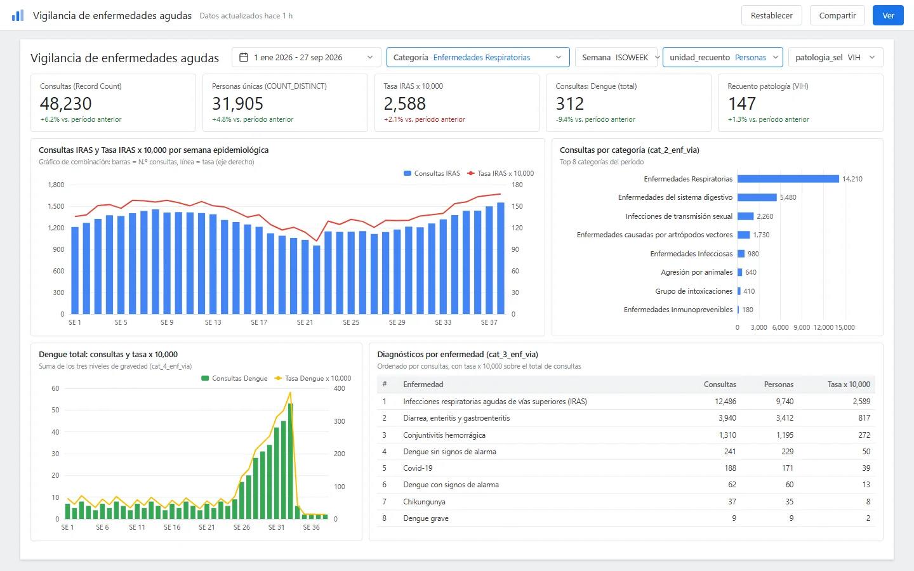
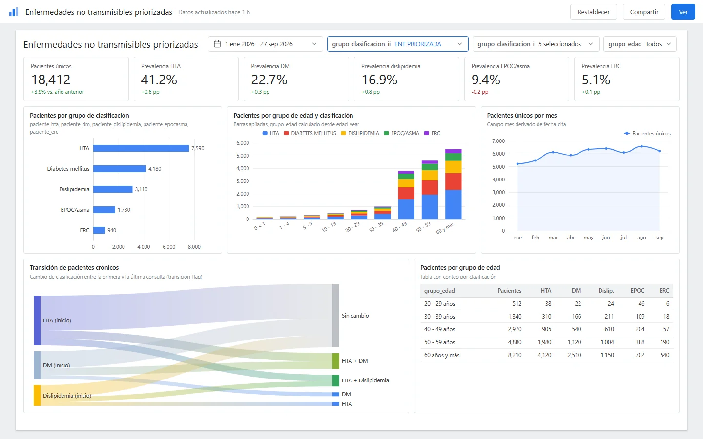
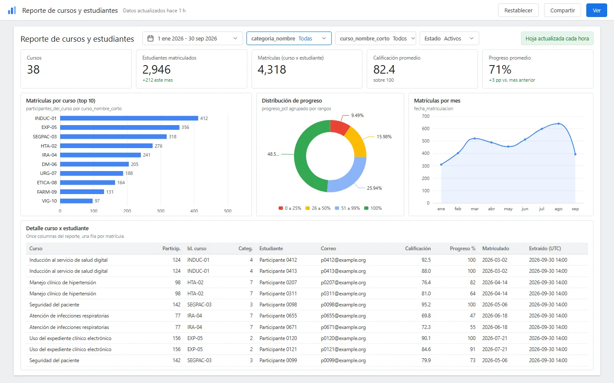

Reportes en Looker Studio
Tableros de autoservicio y un informe escrito versionado para una unidad de epidemiología, además de un reporte horario del campus de capacitación, todo creado en Looker Studio sobre una vista de un almacén de datos en la nube y Google Sheets.
- 2tableros, de condiciones agudas y crónicas
- 57páginas del informe escrito, versión 3 del 2026-07-06
- Cada horaactualización del reporte del campus de capacitación, por diseño
Entregado en 2026. Los conteos provienen de los archivos del proyecto. Ver las pantallas
Problema
La unidad de epidemiología necesitaba ver las condiciones agudas y crónicas sin esperar a que alguien cortara los datos a mano. Tres cosas lo impedían:
- Extractos inconsistentes. Los extractos en bruto de la plataforma clínica no se podían graficar directamente.
- Sin una agrupación compartida. Los códigos de diagnóstico no estaban agrupados en las categorías que leen los epidemiólogos (infecciones respiratorias, dengue, hipertensión, diabetes), y no existía una regla acordada para las tasas ni para el conteo de pacientes.
- Datos del campus encerrados. El equipo del campus de capacitación tenía los datos de cursos y estudiantes dentro de la base de datos de la plataforma de aprendizaje, sin un reporte actualizado, y su API web pública estaba siendo bloqueada.
Solución
Dos tableros y un reporte horario, cada uno documentado como texto para que la lógica pueda leerse y reproducirse.
Extractos clínicos -> limpieza en Python (Colab) -> vista del almacén (BigQuery) -> Looker Studio Base de datos de la plataforma de aprendizaje -> trabajo programado de solo lectura (cada hora) -> Google Sheets -> Looker Studio
- Tablero de condiciones agudas. Un gráfico combinado de consultas y una tasa por 10,000 por semana epidemiológica, desgloses por categoría y por enfermedad, y totales de dengue. Seis columnas de clasificación agrupan los códigos de diagnóstico en las categorías que lee la unidad.
- Tablero de condiciones crónicas. Hipertensión, diabetes, dislipidemia, EPOC/asma y enfermedad renal crónica, con tarjetas de prevalencia, nueve grupos de edad y un indicador de transición que muestra cómo se mueven los pacientes entre clasificaciones.
- Lógica como texto. Los campos calculados y los filtros se conservan como archivos de texto versionados, en lugar de vivir solo dentro de la herramienta. Los parámetros permiten que una misma tabla alterne entre contar personas y contar citas, o entre patologías.
- Un informe escrito con un generador reutilizable. El tablero de condiciones crónicas se documenta en un informe en Word y PDF (versión 3, 57 páginas) con la limpieza de datos como primera parte y el tablero como segunda. Una guía de estilo compartida y un generador con docx-js hacen que el siguiente informe sea repetible.
- Reporte del campus de capacitación. Un trabajo horario de solo lectura dentro del clúster consulta la base de datos de la plataforma de aprendizaje y reescribe una hoja de Google Sheets mediante la API de Sheets, que Looker Studio lee. Se documentaron cuatro rutas de entrega (notebook, Apps Script, Cloud Run, Kubernetes CronJob). Se eligió el trabajo dentro del clúster porque evita la API web pública y mantiene privada la base de datos.
Impacto
Cifras contadas a partir de los archivos del proyecto, al 2026-09-30:
- Dos tableros (condiciones agudas y crónicas) y un reporte del campus.
- 12 archivos de texto para el tablero de condiciones agudas: 4 de campos calculados, 6 de clasificación y 2 de filtros o parámetros. El tablero de condiciones crónicas tiene unas dos docenas de campos calculados en un archivo de referencia.
- Un informe escrito en 3 versiones (2026-07-05 y 2026-07-06), con un historial de cambios por versión. La versión final tiene 57 páginas.
- Reporte del campus actualizado cada hora por diseño (programación
0 * * * *), con un formato de 11 columnas por curso y estudiante. - Acceso más rápido a la información para la unidad: los cortes que pidieron se convirtieron en filtros y tarjetas en lugar de solicitudes ad hoc.
- Aquí no se publican cifras de uso, porque no se registraron en los archivos.
Mi rol
- Requerimiento con la unidad de epidemiología: qué medir, las agrupaciones de enfermedades y de edades, y las definiciones de las tasas.
- Diseño de los tableros en Looker Studio.
- Campos calculados y filtros, incluida la clasificación de los códigos de diagnóstico y el indicador de transición de pacientes.
- Limpieza de los extractos de origen con Python.
- Redacción de informes: el informe escrito versionado y la guía de estilo compartida.
- Reporte del campus: diseñé y documenté el pipeline de datos y su guía operativa. Los registros no establecen quién desplegó el trabajo en la infraestructura institucional, así que este caso reclama únicamente el diseño y la documentación.
Stack
- Looker Studio (nivel gratuito, campos calculados en su propio lenguaje de fórmulas, parámetros y controles).
- Google BigQuery como la vista del almacén detrás de los tableros.
- Google Sheets y la API de Google Sheets como fuente del reporte del campus.
- Python y Google Colab para limpiar los extractos y para la primera versión de la extracción del campus.
- Kubernetes CronJob, imagen de Docker y Artifact Registry para el trabajo horario del campus; Cloud Run y Apps Script se documentaron como alternativas.
- docx-js (Node.js) para el generador de informes, con referencias en formato APA 7.
Humano en el circuito en este proyecto
Las rutas de evidencia que aparecen abajo corresponden a repositorios privados y se muestran como texto plano.
- Documentación del tablero e historial de cambios:
reporteria/tableros/epidemiologico-patologias-cronicas/README.mdyVERSIONES.md(versiones 1 a 3, del 2026-07-05 al 2026-07-06). - Especificación original del tablero, fechada:
reporteria/tableros/epidemiologico-patologias-cronicas/fuentes/20260705_spec-dashboard-epidemiologico.pdf. - Campos calculados y filtros como texto:
reporteria/tableros/epidemiologico-patologias-agudas/campos_calculados_tasas_todas.txt,filtro_recuento_personas_citas.txt,filtro_patologia_vih_tb.txt; crónicas:fuentes/campos_calculados_looker.md. - Límites conocidos puestos por escrito, por ejemplo la definición de semana (semana ISO frente a la semana epidemiológica nacional) anotada en
campos_calculados_tasas.txt. - Informe entregado:
salidas/20260706_informe-epidemiologico_v3.pdf; guía de estilo compartida_comun/GUIA_ESTILO_REPORTES_[project].md; generador_comun/generador/generar_informe.jsy su README, con la regla de que el archivo entregado prevalece sobre el generador. - Guía operativa del reporte del campus:
docs/REPORTE_[project]_SHEETS_GKE.md,cloudrun_[project]_sync/README.md,appscript/README.mdy el notebook de extracción[project]_looker_reporte.ipynb. - Por qué este trabajo llevó al siguiente caso:
app/docs/adr/0001-stack-hibrido.mdregistra la necesidad de una aplicación que supere los límites de Looker Studio.
Estado
Los tableros y el informe escrito están entregados. El pipeline del campus está diseñado y documentado. Estos tableros llegaron a los límites de Looker Studio (costo por consulta, filtrado interactivo lento, cifras que no se podían rastrear), lo que dio origen al caso de la plataforma de analítica epidemiológica.
Pantallas



La información de estas pantallas ha sido anonimizada.